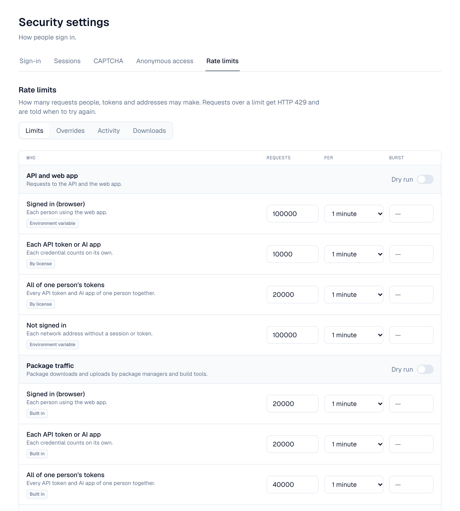

Every request takes from a budget: one per caller and kind of traffic. A caller over its budget gets 429 Too Many Requests and is told when to try again. Limits are shared by every server of a cluster through Redis. Administrators change them in Settings → Security → Rate limits without restarting, and give one role, organization, user, API token or AI app a different budget. Download quotas (Pro and up) also limit how many bytes each person, address, token, AI app, organization or repository downloads per day and month.
1. Who counts against what
| Traffic | Signed in (browser) | Each API token or AI app | All of one person's tokens | Not signed in (per address) |
|---|---|---|---|---|
| API and web app (/api) | 600 a minute (RATE_LIMIT) | By license: 1,000 / 5,000 / 10,000 a minute (Standard / Pro / Enterprise) | By license: 2,000 / 10,000 / 20,000 a minute | 60 a minute (RATE_LIMIT_ANON) |
| Package traffic (package managers and build tools: /repository/…, Docker's /v2/, Terraform, linked installations) | 20,000 a minute (RATE_LIMIT_BULK) | 20,000 a minute | 40,000 a minute | 20,000 a minute |
- A token or AI app has its own budget and takes from its owner's total, so many tokens can't add up to more than the total. A token's traffic doesn't use up its owner's browser budget.
- A budget is a rate and a burst: a caller may send the burst back to back, then the steady rate. There is no doubling at minute boundaries.
- A rate of 0 means no limit.
Per network address, whoever is calling:
| Limit | Default | What it counts |
|---|---|---|
| Flood guard | 10,000 a minute (RATE_LIMIT_PREAUTH) | Every request from one address, before sign-in is checked. Networks you list under Networks the flood guard skips (such as your build agents' subnets) aren't checked; their requests still count against the other limits. |
| Live updates | 20 a minute (RATE_LIMIT_WS) | New WebSocket connections |
| Plugin endpoint requests per client address | 600 a minute (RATE_LIMIT) | Requests to plugins' endpoints (such as MCP servers), before the caller is known |
| Failed sign-ins and unknown tokens | 20 in 15 minutes (AUTH_IP_RATE_LIMIT, AUTH_IP_RATE_WINDOW) | Wrong passwords, and API or OAuth tokens that were never issued. An address over it is refused until the window ends. Expired or revoked tokens don't count. |
AI agents have their own budgets too: see Plugin endpoints.
2. When a limit is reached
The answer is 429 with:
- Retry-After: the seconds to wait (exact, not always 60).
- RateLimit-Policy and RateLimit (the IETF format, on every limited response, not only 429): the budget, what's left and when it refills, for example "api";q=600;w=60 and "api";r=0;t=7.
- A JSON error with class and retry_after_seconds (mcp_rate_limited on MCP servers, download_quota_exceeded for download quotas).
Most package managers wait and retry on 429. Scripts calling the API should do the same, using Retry-After.
3. Changing the limits
The Rate limits tab of Settings → Security (settings:write) has four views: Limits, Overrides, Activity and Downloads. Changed limits are saved with the page's Save, together with anything changed on the other Security tabs.

- Limits — One table lists every budget, grouped by kind of traffic. Each shows its value and where it comes from: Saved, Environment variable, By license or Built in. Change the requests, period and burst, or select Use default.
- Try it first — Turn on Dry run for a kind of traffic: requests over its limits are counted in Activity but not refused. RATE_LIMIT_DRY_RUN=true does this for every limit from the start.
- Save — Every server applies the change within 30 seconds (at once with Redis), without a restart.
The environment variables are only defaults: a saved value replaces them on every server. RATE_LIMIT_SETUP (30 a minute per address in the setup wizard and recovery page) can only be set in the environment.
Saving raises security.rate_limits.update, which policies can block. Every change is in the audit log.
4. Overrides
An override gives one role, organization, user, API token or AI app a different budget on one kind of traffic. Add them on the Overrides tab, or where the thing lives:
- Profile → API tokens: the gauge button on a token.
- Settings → Applications: Rate limits on an AI app.
- Users → a user → Rate limits.
- The Activity tab: Add override on a caller that was limited.
| Setting | What it does |
|---|---|
| Applies to and Which one | Token (its number), AI app (its client ID), user (their number), organization (its number) or role (its name) |
| Route class | API and web app, Package traffic, Plugin endpoints (AI agents), or Download quotas |
| Counts | Browser sessions and tokens, browser sessions only, or API tokens and AI apps only |
| Budget | Requests, period and burst |
| Dry run | Count requests over this budget without refusing them |
| Exempt from rate limits | No limit at all (Enterprise) |
| Note | Why it exists, for other administrators |
- The most specific override wins: the token or AI app, then the user, the organization, the role, then the installation's limits. An override for browser sessions only or tokens only beats one for both at the same level.
- Ceilings: an override may raise a budget to 2× the installation's limit on Standard, 10× on Pro, without limit on Enterprise. The form shows both values. After a license downgrade, higher overrides are capped and exempt ones apply their budget.
- Organization administrators (api_tokens:admin) see only the Rate limits tab, with only Overrides, for their own organization: at most the installation's limits, never exempt, and no download quotas.
- Overrides raise security.rate_limit_override.create, .update and .delete, which policies can block.
Everyone sees their own budgets under Profile → API tokens → Your rate limits: their browser budget, each token's, their total, their AI app connections and MCP keys, and their download use when quotas are on.
5. Activity
The Activity tab shows how many requests were limited (or would have been, in dry run) in the last 1 to 24 hours, per kind of traffic, and the callers limited most. Being limited isn't an event; it's only counted here. When Redis is unavailable the counts are from the server that answered only, and the tab says so.
6. Plugin endpoints (AI agents)
- Each AI app connection or MCP key may make 120 requests a minute (MCP_RATE_LIMIT) across every plugin endpoint (MCP server). Overrides on Plugin endpoints (AI agents) change it per AI app, user, organization or role. Over it: 429 mcp_rate_limited.
- One agent's share of a plugin: a plugin has calls per second for everyone together; one AI app connection or MCP key may use 50% of them (PLUGIN_CALLER_SHARE_PCT), so one agent can't use up a plugin.
- A plugin's page (Settings → Plugins → the plugin → Call limits) sets its calls per second, each caller's share, and calls per second for a particular AI app instead of the share. Use defaults goes back to the plugin's and the installation's values.
The plugin endpoint budgets were called MCP until this release (API class mcp, settings mcp and mcp_credential). The API now uses plugin-endpoint, plugin_endpoint and plugin_endpoint_credential; the old names are still read, and still sent beside the new ones, for one release. Per-credential counters start again at the upgrade, and metrics dashboards filtering on class="mcp" need the new name.
7. Download quotas
Download quotas limit the bytes downloaded from repositories per UTC day and per UTC month. They need a Pro or Enterprise license and are off until you turn them on in the Download quotas section of the Limits tab (DOWNLOAD_QUOTAS_ENABLED).
| Setting | Default | What |
|---|---|---|
| Per person | None (DOWNLOAD_QUOTA_USER_GIB_PER_DAY, _PER_MONTH) | Each signed-in person: browser, API tokens and AI apps together |
| Per address | None (DOWNLOAD_QUOTA_ANON_GIB_PER_DAY, _PER_MONTH) | Each network address nobody is signed in from |
| Warn at | 80% (DOWNLOAD_QUOTA_WARN_PERCENT) | Share of a quota that raises a warning; 0 never warns |
| Enforce | On (DOWNLOAD_QUOTA_ENFORCE) | Off: only warn, never refuse |
- Overrides of class Download quotas give a day and a month quota to a person, role, organization, API token, AI app, or a repository (space-key/repository-name). Tokens, AI apps, organizations and repositories have a quota only through an override. Exempt is available on Pro: the downloads are counted but never refused.
- Only successful downloads are counted, by the bytes sent. A download that starts under the quota finishes. Over a quota: 429 download_quota_exceeded, with Retry-After until the next UTC day or month.
- At the warning level and at the quota, Depotex raises security.download_quota.reached and sends an in-app alert, once per counter and period: to the person for their own downloads, tokens and AI apps, to super administrators for organizations and repositories.
- The Downloads tab lists the top downloaders over the last 1, 7, 30 or 90 days, by person, token, AI app, organization or repository; Add quota on a row opens the override form. It's up to 5 minutes behind and never lists addresses.
- Totals are kept for 90 days (DOWNLOAD_USAGE_RETENTION_DAYS) by the download-usage job. Erasing a person's data deletes theirs.
Docker, Terraform and linked-installation downloads count against people, tokens and organizations, but not against repository quotas. Download links made by AI tools count against the address that uses them.
8. Redis and clusters
- With Redis, every server shares the same budgets and quotas, and changes reach every server at once.
- Redis can be one server (redis://, rediss://), a Sentinel group (redis+sentinel://) or a Redis Cluster (redis+cluster://): see Single Node & Cluster.
- If Redis is unavailable, each server counts on its own until it's back, so N servers allow up to N× a budget, and a person can download up to a quota once per server. Sign-in keeps working; failed attempts are counted per server. Nothing counted is lost when Redis returns. Depotex logs one warning when Redis goes and one message when it's back.
9. Environment variables
Defaults until saved in Settings → Security → Rate limits. Set the same values on every server.
| Variable | Default | What |
|---|---|---|
| RATE_LIMIT | 600 | API requests a minute per signed-in person (browser), and plugin endpoint requests per client address |
| RATE_LIMIT_ANON | 60 | API requests a minute per address without a session or token |
| RATE_LIMIT_BULK | 20000 | Package-traffic requests a minute per person, token or address (twice that for a person's tokens together) |
| RATE_LIMIT_PREAUTH | 10000 | Flood guard: requests a minute per address, before sign-in |
| RATE_LIMIT_WS | 20 | New WebSocket connections a minute per address |
| RATE_LIMIT_SETUP | 30 | Requests a minute per address in setup and recovery mode (environment only) |
| RATE_LIMIT_DRY_RUN | false | Count requests over the limits instead of refusing them |
| AUTH_IP_RATE_LIMIT, AUTH_IP_RATE_WINDOW | 20, 15m | Failed sign-ins and unknown tokens per address before it is refused |
| MCP_RATE_LIMIT | 120 | Plugin endpoint (MCP) requests a minute per AI app connection or MCP key |
| PLUGIN_CALLER_SHARE_PCT | 50 | Share of a plugin's calls per second one AI agent may use (1 to 100) |
| DOWNLOAD_QUOTAS_ENABLED | false | Turn download quotas on (Pro and up) |
| DOWNLOAD_QUOTA_USER_GIB_PER_DAY, …_PER_MONTH | none | Quota per signed-in person, in GiB (decimals allowed; 0: none) |
| DOWNLOAD_QUOTA_ANON_GIB_PER_DAY, …_PER_MONTH | none | Quota per address nobody is signed in from, in GiB |
| DOWNLOAD_QUOTA_WARN_PERCENT | 80 | Warn at this share of a quota (0: never) |
| DOWNLOAD_QUOTA_ENFORCE | true | false: only warn |
| DOWNLOAD_USAGE_RETENTION_DAYS | 90 | Days of download totals kept for the report (1 to 3650) |
An invalid value stops the server at startup with a message naming the variable.